CST 205: Image Portfolio
Rose-Colored Glasses
This filter replicates the world as seen through a pair of rose-tinted glasses. It works by individually multiplying the red, green and blue channels of the original image by ratios in the 0-1 range which correspond to the RGB values of a "rose" color. This effectively simulates the filtering of different wavelengths of light through colored glass.
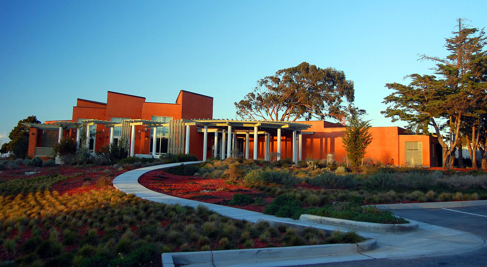
Before
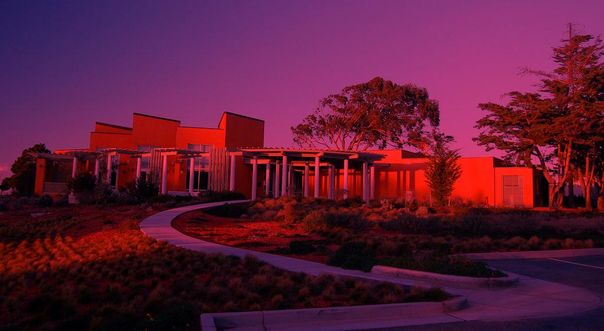
After
def roseColoredGlasses(pic):
rRose = 255
gRose = 63
bRose = 127
multiply(pic, rRose, gRose, bRose)
def multiply(pic, r, g, b):
for p in getPixels(pic):
setRed(p, getRed(p) * r / 255)
setGreen(p, getGreen(p) * g / 255)
setBlue(p, getBlue(p) * b / 255)
repaint(pic)
Negative
This filter inverts the color values of an image, producing an effect similar to that of a film negative. It works by subtracting the values of the red, green and blue channels from 255, the maximum value of each of the channels.
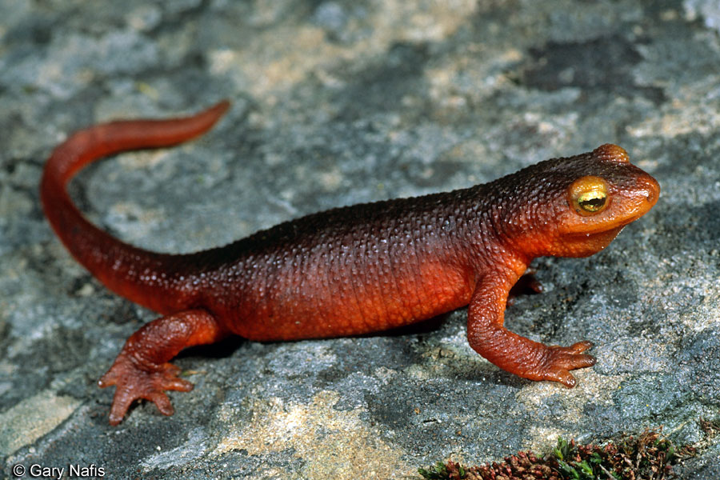
Before
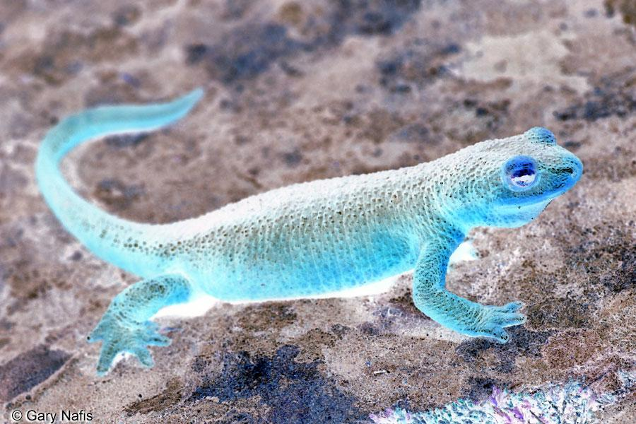
After
def invert(p):
return 255 - p
def makeNegative(pic):
for p in getPixels(pic):
setRed(p, invert(getRed(p)))
setGreen(p, invert(getGreen(p)))
setBlue(p, invert(getBlue(p)))
repaint(pic)
Better Black & White
A naive implementation of black and white simply averages the values of the red, green and blue channels of a pixel for each pixel in an image. While this approach works, it does not accurately model the luminance values one would expect to see in a chemically exposed black and white photograph. Taking the weighted average of the three color channels, using coefficients derived from human perception, yields a much more convincing result.
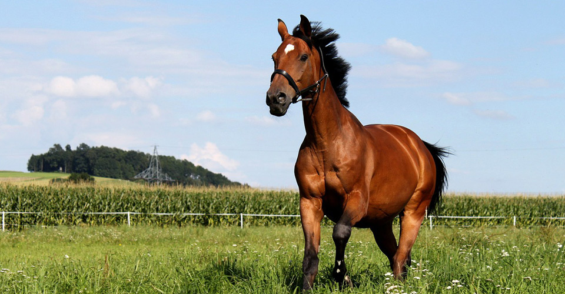
Before
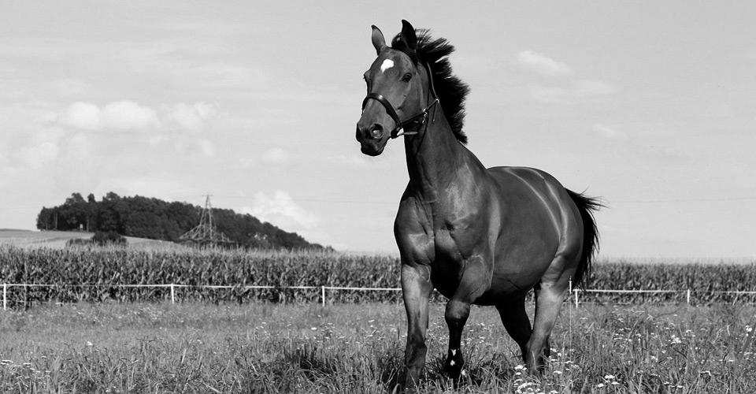
After
def luminance(r, g, b):
return r*0.299 + g*0.587 + b*0.114
def betterBnW(pic):
for p in getPixels(pic):
l = luminance(getRed(p), getGreen(p), getBlue(p))
setRed(p, l)
setGreen(p, l)
setBlue(p, l)
repaint(pic)
Bottom-to-Top Mirror
This simple filter takes all of the pixels on the bottom half of an image and mirrors them across the horizontal center line of the image. Similar to the way we inverted color values to achieve our negative effect, here we use the difference between a pixel's Y coordinate and the total height of the image to determine where it should be "flipped" to.
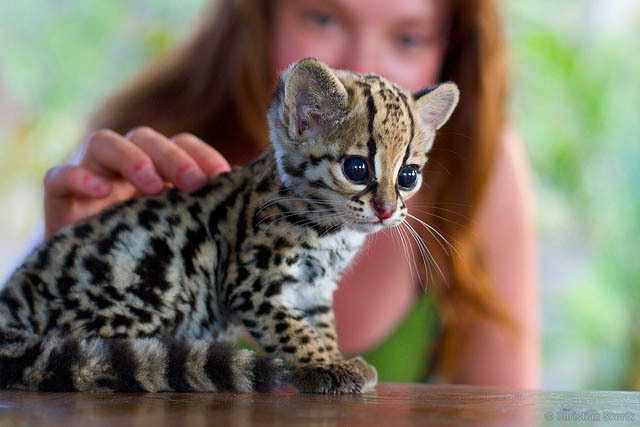
Before
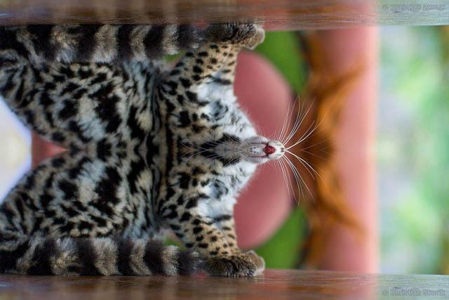
After
def mirrorHorizontalInverse(pic):
height = getHeight(pic)
for x in range(0, getWidth(pic)):
for y in range(0, height//2):
dst = getPixel(pic, x, y)
src = getPixel(pic, x, height - 1 - y)
setColor(dst, getColor(src))
repaint(pic)
Shrink
This is a simple routine that reduces the size of an image by half. It works by only copying every second pixel from the original image into a new, blank image. The pixels are skipped by simply doubling the X and Y coordinates of the smaller image when selecting a pixel from the original image to copy.

Before
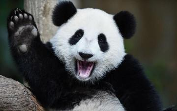
After
def shrink(pic):
copy = makeEmptyPicture(getWidth(pic)//2, getHeight(pic)//2)
for x in range(0, getWidth(copy)):
for y in range(0, getHeight(copy)):
dst = getPixel(copy, x, y)
src = getPixel(pic, min(x*2, getWidth(pic)), min(y*2, getHeight(pic)))
setColor(dst, getColor(src))
return copy
Collage
This is a collage made from multiple images programmatically layered ontop of one another. Of note is that many of the above filters have been applied to the images in this collage.
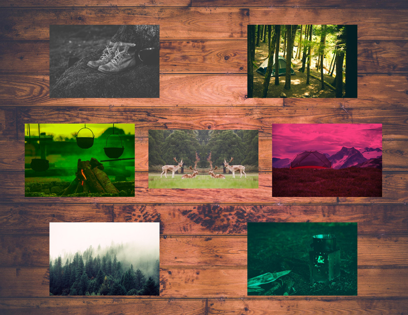
def noBlue(pic):
for p in getPixels(pic):
setBlue(p, 0)
return pic
def lessRed(pic, percent):
scalar = (100 - percent) / 100
for p in getPixels(pic):
setRed(p, getRed(p) * scalar)
return pic
def roseColoredGlasses(pic):
rRose = 255
gRose = 63
bRose = 127
pic = multiply(pic, rRose, gRose, bRose)
return pic
def multiply(pic, r, g, b):
for p in getPixels(pic):
setRed(p, getRed(p) * r / 255)
setGreen(p, getGreen(p) * g / 255)
setBlue(p, getBlue(p) * b / 255)
return pic
def luminance(r, g, b):
return r*0.299 + g*0.587 + b*0.114
def betterBnW(pic):
for p in getPixels(pic):
l = luminance(getRed(p), getGreen(p), getBlue(p))
setRed(p, l)
setGreen(p, l)
setBlue(p, l)
return pic
def mirrorVertical(pic):
width = getWidth(pic)
for x in range(width//2, width):
for y in range(0, getHeight(pic)):
dst = getPixel(pic, x, y)
src = getPixel(pic, width - 1 - x, y)
setColor(dst, getColor(src))
return pic
background = makePicture("...background.jpg")
boots = makePicture("...boots.jpg")
campfire = makePicture("...campfire.jpg")
foggy = makePicture("...foggy.jpg")
forest = makePicture("...forest.jpg")
moose = makePicture("...moose.jpg")
stove = makePicture("...stove.jpg")
tent = makePicture("...tent.jpg")
collage = copyPlace(betterBnW(boots), background, 400, 200)
collage = copyPlace(noBlue(campfire), collage, 200, 1000)
collage = copyPlace(foggy, collage, 400, 1800)
collage = copyPlace(forest, collage, 2000, 200)
collage = copyPlace(mirrorVertical(moose), collage, 1200, 1050)
collage = copyPlace(lessRed(stove, 50), collage, 2000, 1800)
collage = copyPlace(roseColoredGlasses(tent), collage, 2200, 1000)
Red-Eye Reduction
This is a filter for reducing red-eye in photographs. The base routine takes an (x,y) coordinate in the image and a radius to approximate the shape of the pupil. Each pixel within this circular region is then checked for similarity to a pure red color using geometric distance, where the threshold parameter determines the level of "redness" in a pixel required for further processing to apply. Any pixels which pass the threshold test then have their red channel reduced according to the amount parameter. The program repeats this process for a user-selected number of eyes.
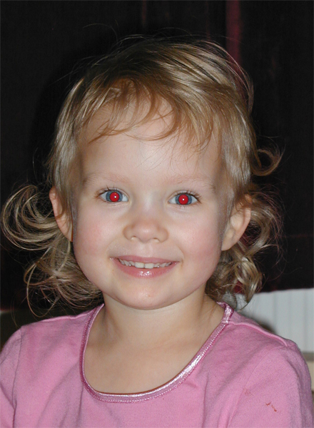
Before
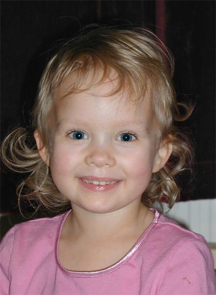
After
def correctRedEye(pic, xCenter, yCenter, radius, thresh, amount):
for x in range(xCenter - radius, xCenter + radius):
for y in range(yCenter - radius, yCenter + radius):
if math.sqrt(math.pow(float(x - xCenter), 2) + math.pow(float(y - yCenter), 2)) <= radius:
p = getPixel(pic, x, y)
if distance(getColor(p), red) < thresh * math.sqrt(3 * math.pow(255, 2)):
setColor(p, makeColor((1 - amount) * getRed(p), getGreen(p), getBlue(p)))
return pic
"""
Values Used:
Number of Corrections: 2
Eye X-Center: 160
Eye Y-Center: 275
Eye Radius: 10
Red Selection Threshold (0-1): 0.4
Red Reduction Amount (0-1): 1
Eye X-Center: 257
Eye Y-Center: 280
Eye Radius: 10
Red Selection Threshold (0-1): 0.4
Red Reduction Amount (0-1): 1
"""
pic = makePicture(pickAFile())
explore(pic)
for i in range(0, input("Number of Corrections: ")):
pic = correctRedEye(
pic,
int(input("Eye X-Center: ")),
int(input("Eye Y-Center: ")),
int(input("Eye Radius: ")),
float(input("Red Selection Threshold (0-1): ")),
float(input("Red Reduction Amount (0-1): ")))
show(pic)
Posterize
This filter creates a step-like effect in each of the three color channels of an image. Red, green and blue values are separated into ranges, and each range is collapsed to a single value. This results in an almost painterly effect.
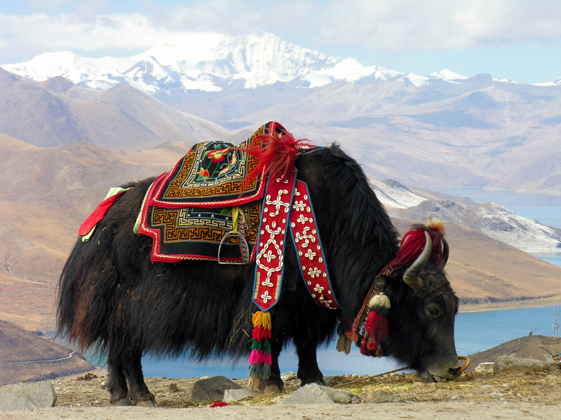
Before
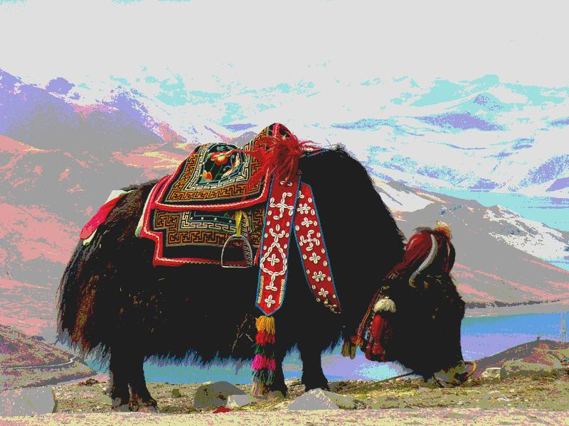
After
def eightBitFloor(val):
if val < 64:
return 31
if val < 128:
return 95
if val < 192:
return 159
else:
return 223
def posterize(pic):
for p in getPixels(pic):
setRed(p, eightBitFloor(getRed(p)))
setGreen(p, eightBitFloor(getGreen(p)))
setBlue(p, eightBitFloor(getBlue(p)))
return pic
Green Screen
This well-known technique measures the geometric distance between a color and a provided "chroma key" (in this case, green!). Pixels within the provided threshold are then replaced with corresponding pixels from a second image. This results in a layering effect commonly used in cinema and television to digitally insert actors into virtual scenes. Difficulties arise near the edge of a subject, where light reflecting off the green screen casts a subtle green glow. In this simple implementation, careful adjustment of the threshold parameter resulted in an acceptable end result. Professional green screen software allows for fine tuning of the selection by exposing multiple chroma keys, each with a unique threshold, to provide subtle blending around edges.
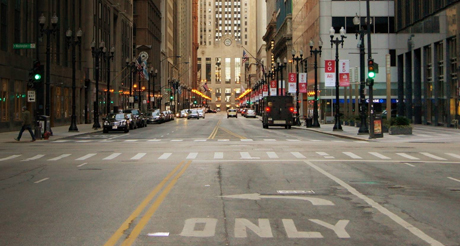
Before (Background)
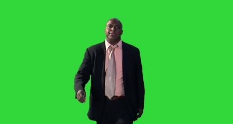
Before (Foreground)
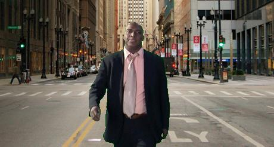
After
def chromaKey(foreground, background, key, thresh):
copy = makeEmptyPicture(getWidth(foreground), getHeight(background))
for x in range(0, getWidth(foreground)):
for y in range(0, getHeight(foreground)):
srcFore = getPixel(foreground, x, y)
srcBack = getPixel(background, x, y)
dst = getPixel(copy, x, y)
if distance(getColor(srcFore), key) < thresh * math.sqrt(3 * math.pow(255, 2)):
setColor(dst, getColor(srcBack))
else:
setColor(dst, getColor(srcFore))
return copy
foreground = makePicture(pickAFile())
background = makePicture(pickAFile())
explore(foreground)
output = input("Save To (Escape Backslashes): ")
key = pickAColor()
while True:
thresh = input("Threshold (-1 to Save): ")
if thresh < 0:
break
pic = chromaKey(foreground, background, key, thresh)
show(pic)
writePictureTo(pic, output)
Thanksgiving Card
This is a "home made" Thanksgiving card. It uses a technique similar to the Green Screen filter to create solid-colored stencils out of photograpphs (in this instance, photographs of autumnal leaves). These stencils are then applied to a base image in a random quantity, distribution, color and size. By varying only the green channel of the stencil's color (leaving red at 255 and blue at 0) leaves stay within a red-orange-yellow family of colors.
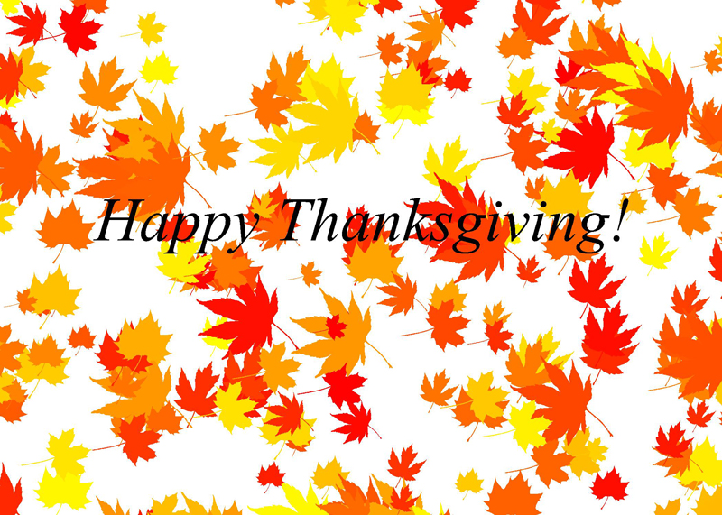
def makeStencil(pic, color, threshold):
expandedThreshold = threshold * (math.sqrt(math.pow(255, 2) + math.pow(255, 2) + math.pow(255, 2)))
stencil = makeEmptyPicture(getWidth(pic), getHeight(pic))
for x in range(0, getWidth(pic)):
for y in range(0, getHeight(pic)):
src = getPixel(pic, x, y)
dst = getPixel(stencil, x, y)
if distance(getColor(src), getColor(dst)) < expandedThreshold:
setColor(dst, black)
else:
setColor(dst, white)
return stencil
def applyStencil(pic, stencil, color, xOffset, yOffset, scale):
invScale = int(math.floor(1 / scale));
for x in range(0, getWidth(stencil), invScale):
for y in range(0, getHeight(stencil), invScale):
if getColor(getPixel(stencil, x, y)) == white:
xPrime = xOffset + int(x / invScale)
if xPrime >= 0 and xPrime < getWidth(pic):
yPrime = yOffset + int(y / invScale)
if yPrime >= 0 and yPrime < getHeight(pic):
setColor(getPixel(pic, xPrime, yPrime), color)
def paintLeaves(pic, stencil, minCount, maxCount):
for i in range(0, random.randrange(minCount, maxCount)):
applyStencil(
pic,
stencil,
makeColor(255, random.randrange(0, 255), 0),
random.randrange(-getWidth(stencil), getWidth(card) + getWidth(stencil)),
random.randrange(-getHeight(stencil), getHeight(card) + getHeight(stencil)),
random.uniform(0.2, 0.5))
leaf1Stencil = makeStencil(makePicture("...leaf1.jpg"), white, 0.25)
leaf2Stencil = makeStencil(makePicture("...leaf2.jpg"), white, 0.25)
leaf3Stencil = makeStencil(makePicture("...leaf3.png"), white, 0.15)
leaf4Stencil = makeStencil(makePicture("...leaf4.png"), white, 0.25)
card = makeEmptyPicture(2100, 1500)
paintLeaves(card, leaf1Stencil, 25, 50)
paintLeaves(card, leaf2Stencil, 25, 50)
paintLeaves(card, leaf3Stencil, 25, 50)
paintLeaves(card, leaf4Stencil, 25, 50)
paintLeaves(card, leaf1Stencil, 25, 50)
paintLeaves(card, leaf2Stencil, 25, 50)
paintLeaves(card, leaf3Stencil, 25, 50)
paintLeaves(card, leaf4Stencil, 25, 50)
addTextWithStyle(
card,
275,
700,
"Happy Thanksgiving!",
makeStyle("serif", italic, 180),
black)
Line Art
This filter converts an image into something resembling a line drawing or charcoal sketch. This is achieved by comparing the luminance of each pixel (where luminance is defined as the weighted average used in the Better Black & White filter above) to the luminance of its neighbor pixels. If the difference between a pixel's luminance and its neighboring pixels' luminance is outside of the provided threshold value, the pixel is made black, otherwise the pixel is made white. Using a lower threshold results in an image more similar to a charcoal sketch, where subtle luminance changes yield a swath of fine dots. Higher threshold values create something more like a line drawing, where only particularly sharp luminance changes are reflected in the final image.
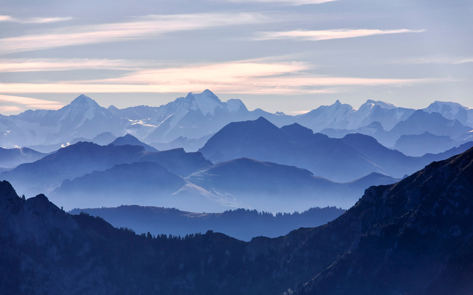
Before
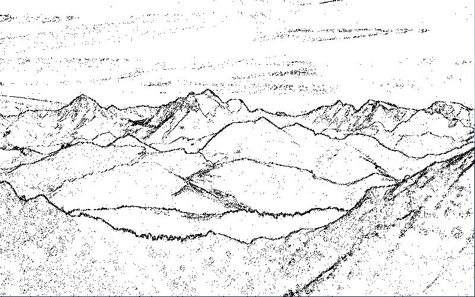
After
def luminance(p):
return getRed(p)*0.299 + getGreen(p)*0.587 + getBlue(p)*0.114
def lineArt(pic, threshold):
for x in range(0, getWidth(pic) - 1):
for y in range(0, getHeight(pic) - 1):
p = getPixel(pic, x, y)
r = getPixel(pic, x+1, y)
b = getPixel(pic, x, y+1)
if abs(luminance(p) - luminance(r)) > threshold and abs(luminance(p) - luminance(b)) > threshold:
setColor(p, black)
else:
setColor(p, white)
return pic
pic = lineArt(makePicture(pickAFile()), 2.5)